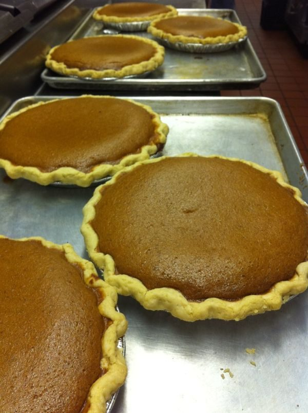

Chocolate Marshmallow Cookie Pie

Photo: kurmanstaff (CC BY 2.0)
A no-bake chocolate pudding pie in a prepared chocolate crust, layered with vanilla wafers and a marshmallow-whipped topping mixture.
Directions
- Microwave marshmallows and 2 tbs milk in medium microwave bowl on High 45 seconds. Stir. Marshmallows will be partially melted.) Refrigerate for 15 minutes to cool. Stir in 1 cup whipped topping.
- Pour 2 cups milk into large bowl. Add pudding mixes. Beat with wire whisk 2 minutes. Let stand 1 minute or until thickened. Sir in remaining 1 1/2 cup whipped topping. Spoon into crust. Arrange cookies over pudding mixture. Spread marshmallow mixture over cookies.
- Refrigerate 4 hours. Drizzle with chocolate topping before serving if you have any.
- Microwave the marshmallows and 2 tablespoons milk in a medium microwave bowl on High for 45 seconds, then stir. (The marshmallows will be partially melted.) Refrigerate for 15 minutes to cool, then stir in 1 cup of the whipped topping.
- Pour 2 cups cold milk into a large bowl. Add the pudding mixes and beat with a wire whisk for 2 minutes. Let stand 1 minute, or until thickened. Stir in the remaining 1 1/2 cups whipped topping.
- Spoon the pudding mixture into the prepared chocolate crust. Arrange the vanilla wafers over the pudding mixture, then spread the marshmallow mixture over the cookies.
- Refrigerate 4 hours. Drizzle with chocolate topping before serving, if you have any.
Goes well with
https://baron-3dl.github.io/normans-kitchen/recipe/chocolate-marshmallow-cookie-pie.html